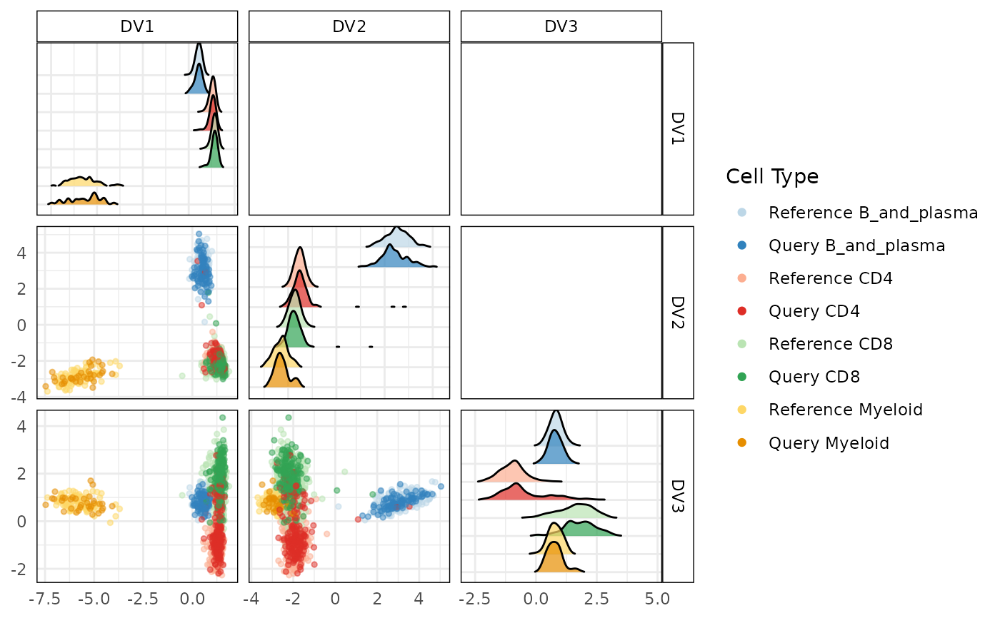
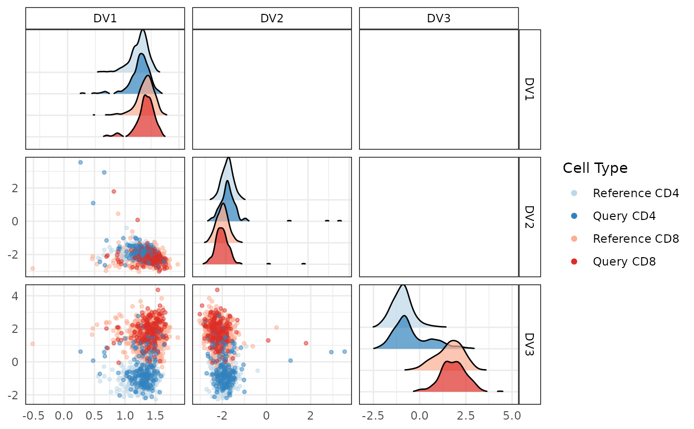

R/calculateDiscriminantSpace.R, R/plot.calculateDiscriminantSpaceObject.R
calculateDiscriminantSpace.RdThis function projects query single-cell RNA-seq data onto the discriminant space defined by reference data. The reference data is used to identify important variables and compute discriminant vectors, which are then used to project both reference and query data. Similarity between the query and reference projections is assessed using cosine similarity and Mahalanobis distance.
The S3 plot method plots the projected reference and query data on discriminant spaces.
calculateDiscriminantSpace(
reference_data,
query_data = NULL,
ref_cell_type_col,
query_cell_type_col = NULL,
cell_types = NULL,
n_tree = 500,
n_top = 20,
eigen_threshold = 0.1,
calculate_metrics = FALSE,
alpha = 0.01,
assay_name = "logcounts"
)
# S3 method for class 'calculateDiscriminantSpaceObject'
plot(x, cell_types, plot_type = c("scatterplot", "boxplot"), ...)A SingleCellExperiment object containing numeric expression matrix for the reference cells.
A SingleCellExperiment object containing numeric expression matrix for the query cells.
If NULL, only the projected reference data is returned. Default is NULL.
The column name in reference_data indicating cell type labels.
The column name in query_data indicating cell type labels.
A character vector specifying the cell types to plot. If not provided, all cell types will be plotted.
An integer specifying the number of trees for the random forest used in variable importance calculation.
An integer specifying the number of top variables to select based on importance scores.
A numeric value specifying the threshold for retaining eigenvalues in discriminant analysis.
Parameter to determine if cosine similarity and Mahalanobis distance metrics should be computed. Default is FALSE.
A numeric value specifying the significance level for Mahalanobis distance cutoff.
Name of the assay on which to perform computations. Default is "logcounts".
An object of class calculateDiscriminantSpace containing the projected data on the discriminant space..
Each element of the list represents a combination of cell types and datasets. Each element should contain 'ref_proj' and 'query_proj' data frames.
Type of plot to generate. Options are "scatterplot" and "boxplot". Default is "scatterplot".
Additional arguments to be passed to the plotting functions.
A list with the following components for each cell type combination:
Eigenvalues from the discriminant analysis.
Eigenvectors from the discriminant analysis.
Reference data projected onto the discriminant space.
Query data projected onto the discriminant space.
Mahalanobis distances of query projections.
Cutoff value for Mahalanobis distance significance.
Cosine similarity scores of query projections.
The S3 plot method returns a ggplot object representing the scatterplot or boxplot of the projected data.
The function performs the following steps for each pairwise combination of cell types:
Identifies the top important variables to distinguish the two cell types from the reference data.
Computes the Ledoit-Wolf shrinkage estimate of the covariance matrix for each cell type using the top important genes.
Constructs within-class and between-class scatter matrices.
Solves the generalized eigenvalue problem to obtain discriminant vectors.
Projects both reference and query data onto the discriminant space.
Assesses similarity of the query data projection to the reference data using cosine similarity and Mahalanobis distance.
The S3 plot method generates either a scatterplot or a boxplot to visualize the projected data onto the discriminant spaces. For scatterplot, each point represents a projected data point, and colors are used to differentiate between different cell types and datasets. For boxplot, the distribution of the projected data values for each cell type is shown, separated by datasets.
Fisher, R. A. (1936). "The Use of Multiple Measurements in Taxonomic Problems". *Annals of Eugenics*. 7 (2): 179–188. doi:10.1111/j.1469-1809.1936.tb02137.x.
Hastie, T., Tibshirani, R., & Friedman, J. (2009). *The Elements of Statistical Learning: Data Mining, Inference, and Prediction*. Springer. Chapter 4: Linear Methods for Classification.
Ledoit, O., & Wolf, M. (2004). "A well-conditioned estimator for large-dimensional covariance matrices". *Journal of Multivariate Analysis*. 88 (2): 365–411. doi:10.1016/S0047-259X(03)00096-4.
De Maesschalck, R., Jouan-Rimbaud, D., & Massart, D. L. (2000). "The Mahalanobis distance". *Chemometrics and Intelligent Laboratory Systems*. 50 (1): 1–18. doi:10.1016/S0169-7439(99)00047-7.
Breiman, L. (2001). "Random Forests". *Machine Learning*. 45 (1): 5–32. doi:10.1023/A:1010933404324.
plot.calculateDiscriminantSpaceObject
calculateDiscriminantSpace
# Load data
data("reference_data")
data("query_data")
# Compute important variables for all pairwise cell comparisons
disc_output <- calculateDiscriminantSpace(reference_data = reference_data,
query_data = query_data,
query_cell_type_col = "SingleR_annotation",
ref_cell_type_col = "expert_annotation",
n_tree = 500,
n_top = 50,
eigen_threshold = 1e-1,
calculate_metrics = FALSE,
alpha = 0.01)
# Generate scatter and boxplot
plot(disc_output, plot_type = "scatterplot")

plot(disc_output, cell_types = "CD4-CD8", plot_type = "boxplot")

# Check comparison
table(Expert_Annotation = query_data$expert_annotation, SingleR = query_data$SingleR_annotation)
#> SingleR
#> Expert_Annotation B_and_plasma CD4 CD8 Myeloid
#> B_and_plasma 97 0 0 5
#> CD4 0 132 2 4
#> CD8 2 105 109 14
#> Myeloid 0 0 0 33